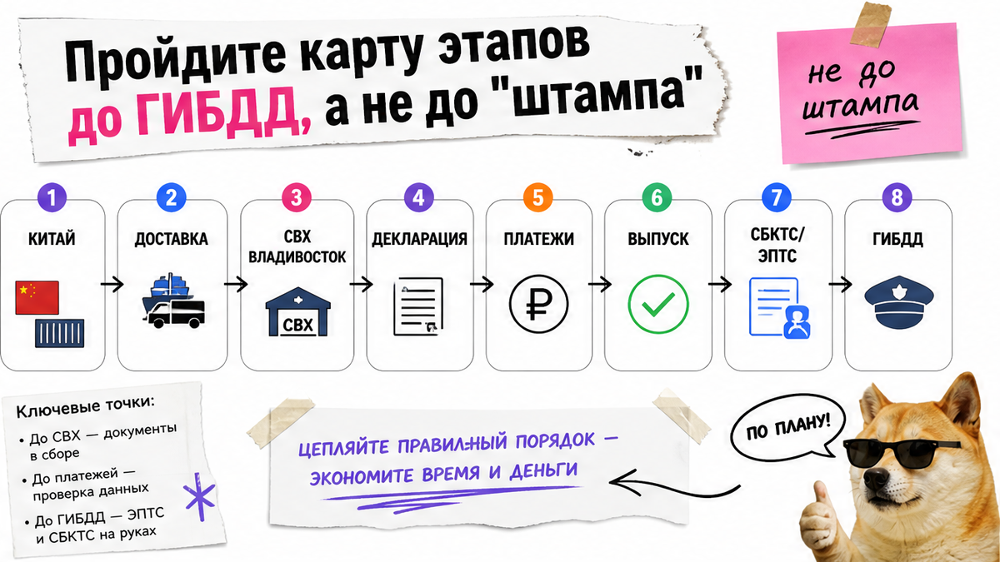
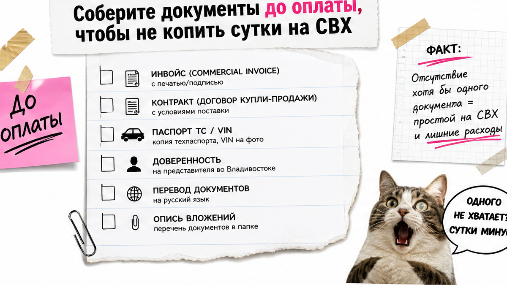
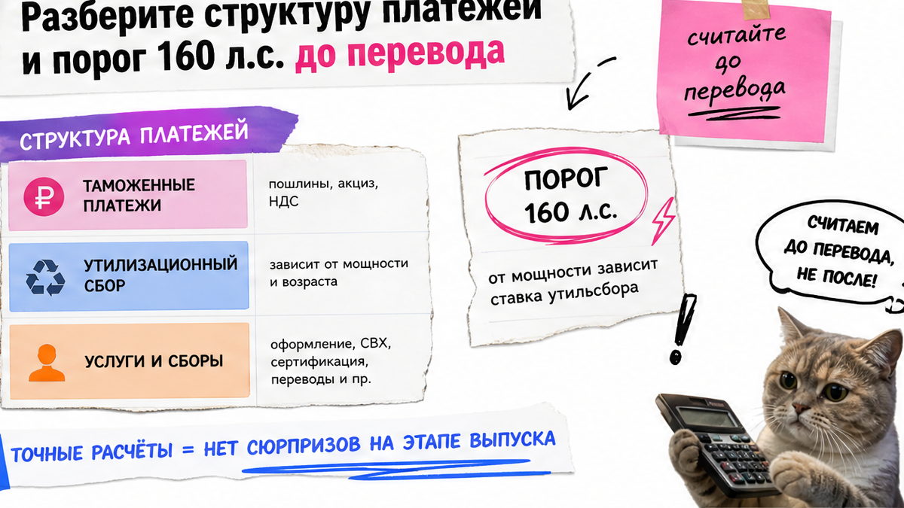

Машина уже едет из Китая, а вы гуглите, что такое СВХ и почему на таможне просят явиться лично. Типичная история: красивая смета в чате, потом простой у Владивостока из-за инвойса, мощности и неполного пакета. Ниже – этапы растаможки авто из Китая через Владивосток в 2026, чек-лист документов до оплаты и карта пути до учёта. После гайда вы соберёте пакет заранее и поймёте, куда идти за живым расчётом платежей – без слепой оплаты "на всякий случай".
Коротко по делу: Растаможка – не один штамп, а цепочка: прибытие → СВХ → декларация и платежи → выпуск → СБКТС → ЭПТС → доставка и ГИБДД. До оплаты зафиксируйте мощность в л.с., полный инвойс с VIN и подтверждение перевода. Готовые суммы из чужих блогов устаревают – считайте платежи под ваш экземпляр. Без СБКТС и ЭПТС после выпуска на учёт не поставить.
Боюсь сюрприза по цене и вызова "лично" – так звучит боль новичка. Как у Игоря из региона: смета в чате выглядела ровно, а на СВХ у Владивостока всплыли инвойс ниже рынка, мощность чуть выше 160 л.с. и просьба подтвердить личное пользование. На практике чаще срывает неполный пакет, а не "обсчёт всех подряд": за январь–май 2026 Уссурийская таможня оформила ~33,5 тыс. авто для личных нужд, корректировку цены – лишь по 545 (~1,6%).

Непонятно, что будет с машиной после границы. На пальцах: СВХ – склад временного хранения, пока идёт таможня; декларация (ПТД) – заявление "вот машина и документы"; выпуск – разрешение забрать авто. Дальше ещё лаборатория и электронный паспорт.
Workflow растаможки через Владивосток:
Китай (инвойс и экспорт) → порт / прибытие → СВХ (сверка VIN) → декларация и платежи → выпуск → СБКТС в лаборатории → ЭПТС "действующий" → доставка в регион → учёт в ГИБДД
| Этап | Что происходит | Типичная ошибка | Что подготовить |
|---|---|---|---|
| Прибытие и СВХ | Сверка VIN, фото, комплектность | Бумаги досылают после стоянки | Инвойс, договор, экспорт КНР, переводы |
| Декларация и платежи | ПТД, пошлины/сборы, утильсбор | Чужой скрин "итого N рублей" | Живой расчёт под мощность и цену |
| Выпуск | Авто можно забрать с таможни | "Уже всё, еду в ГИБДД" | Сохранить ТПО после оплаты |
| СБКТС и ЭПТС | Лаборатория → электронный ПТС | Не заложены сроки после выпуска | Запись в аккредитованную лабораторию |
Делать: держите всю цепочку и закладывайте время на лабораторию. Не делать: считать, что после выпуска уже можно ехать с номерами.

Пока пакет дырявый, машина стоит. Платить за простой обидно уже с первых суток. Соберите черновик до перевода денег продавцу или агенту.
Делать: закрывать чек-лист до оплаты. Не делать: надеяться, что "на месте докинем".

Люди ищут "сколько стоит растаможка авто из Китая" и находят чужие таблицы. Здесь нет готового калькулятора сумм – только структура, чтобы знать, что спросить. Обычно у физлица: таможенные сборы, пошлины/налоги для личного ТС и утильсбор (ФТС). С 01.12.2025 в расчёт утильсбора легковых добавлена мощность. Для личного пользования часто обсуждают льготный коридор до 160 л.с. при условиях: не больше одного авто в год, без продажи 12 месяцев, объём в лимите. Например, "почти 160" в чате при пересчёте из кВт может оказаться выше порога.
Делать: до оплаты запросите живой расчёт в каталоге avto-sales125.ru по модели, году, цене и л.с. Не делать: опираться на чужой скрин "итого" – ставки меняются, а инвойс у вас другой.
Корректировка цены – не приговор каждому: большинство машин у Уссурийской таможни проходит без пересчёта. Если инспектор сомневается в инвойсе, цену могут сверить с открытыми площадками (в community упоминают витрины вроде CHE168) и попросить доказательства оплаты. Явка "лично" чаще при неясной цене, праве владения или льготе. Компетенция постов в Приморье задана приказом Минфина № 178н – отсюда вопросы про проживание и привязку к посту.
Делать: храните договор, инвойс и банковские чеки одним комплектом; не занижайте цену "для красоты сметы". Не делать: отвечать таможне скринами из чата без платёжки.
Выпуск – ещё не финиш. СБКТС (свидетельство о безопасности конструкции) оформляют в лаборатории на конкретный VIN при единичном ввозе. ЭПТС – электронный паспорт со статусом "действующий". Сохраните ТПО – подтверждение платежей. Чистая таможня при готовых бумагах часто занимает 2–4 рабочих дня; полный путь с логистикой и лабораторией – неделями. "Всегда 20–25 дней" как константа – плохой ориентир.
Делать: планировать календарь после выпуска отдельно. Не делать: покупать билеты "забрать и поставить завтра".
Важнее не миф про "магию порта", а понятный пост, СВХ и полный пакет. Владивосток – морской хаб под азиатский поток; сухопутные КПП живут своими очередями. Маршрут обсуждайте с тем, кто ведёт заказ.
| Критерий | Самостоятельно | С сопровождением |
|---|---|---|
| Пакет документов | Собираете сами, риск пропуска высокий | Чек-лист и сверка до оплаты |
| Платежи и утиль | Чужие калькуляторы в блогах | Живой расчёт под VIN и л.с. |
| Явка / вопросы | Стресс и поиск "что отвечать" | Доказательства готовят заранее |
| После выпуска | Сами ищете лабораторию и ЭПТС | Маршрут СБКТС → ЭПТС → доставка |
Итоговый вердикт: Формально растаможить самому можно. Новичку чаще ломают процесс дыры в пакете и явка. Первое авто из Китая безопаснее вести с сопровождением и живым расчётом, чем экономить ценой простоя на СВХ.
Критерий результата: заполненный чек-лист + карта этапов. После шагов вы сможете запросить платежи по своим цифрам и не оплачивать авто "вслепую".
Делать: закрыть пункты до предоплаты. Не делать: путать "красивую смету в чате" с полным пакетом.
Офис во Владивостоке: Днепровская 40а, стр. 4. Форм на странице статьи нет.
Материал проверен: Редакция Авто-Сейлс – эксперты по авто под заказ из Японии, Кореи и Китая (Владивосток).
Достоверность: этапы сверены с ФТС/КонсультантПлюс (ввоз ТС для личного пользования), приказом Минфина № 178н, обзорами ПП РФ № 1713 (утильсбор с 01.12.2025) и VLADIVOSTOK1 от 14.06.2026; СБКТС/ЭПТС – по гайдам лабораторий и практике заказов. Суммы платежей не выносим – живой расчёт на дату запроса.
Чистая таможня при готовых документах часто 2–4 рабочих дня. Полный путь с СВХ, СБКТС и ЭПТС – обычно недели. Заложите буфер под ваш пакет, а не одну цифру из рекламы.
Формально да. Новичку чаще мешают неполный пакет, платежи и явка. Первый ввоз безопаснее вести с сопровождением и чек-листом до оплаты.
Владивосток – морской хаб с привычными СВХ. Сухопутные КПП живут другой логистикой. Вам важнее пост, полный пакет и декларант, а не слоган "быстрее, потому что порт".
Запросите живой расчёт по мощности, цене инвойса, году и цели ввоза. Статичные суммы из чужих гайдов устаревают. Форм на странице нет – считайте в переписке под ваш VIN.
Порог с 01.12.2025 влияет на утильсбор. Для льготы физлица проверьте л.с. до оплаты и условия по перепродаже. Считайте под ваш экземпляр, не "как у соседа".
Да. Выпуск разрешает забрать машину, но для учёта обычно нужны СБКТС на VIN, ЭПТС "действующий" и ТПО. Планируйте лабораторию сразу после выпуска.
Соберите договор, инвойс и банковские чеки. Не занижайте цену заранее. Готовьте комплект до СВХ – паника в чате пакет не заменяет.